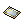

Rudus 4
Rudus 4 is a leveling map for level 200+ players.
Being in a party for greater exp bonuses and having appropriate equipment is recommended. Also, monsters here take more damage from attacks with Wind / Earth / Fire / Water Elements in general.
Besides being a good leveling place, it's possible to obtain new cards and the new Scrap Weapons. Also, all enemies in the dungeon have a 3.0% chance to drop  Etel Dust
Etel Dust
Access

After obtaining at least level 200, you need to talk to Yulma (this is a pre-req mini quest), then:
- Go to Rudus 3 and talk to Pion .
Daily Quests
After completing Rudus 4 access quest you can talk to Yulma again and get 3 daily EXP quests:
- Abyssal Solitude: Kill 10 Dolorian, Plagarion and Deadre
- Reward: 397,898,500 base EXP and 278,529,000 job EXP
- Transformation and Evolution: Kill 15 Giant Caput and 15 Dolorian
- Reward: 379,424,250 base EXP and 275,047,500 job EXP
- Data Backup: Talk to Secret Wing Researcher
- Reward: 375,000,000 base EXP and 275,000,000 job EXP
Monsters
| Image | Name | Level | HP | Size / Race / Element |
|---|---|---|---|---|
| Giant Caput | 213 | 4,439,942 | Large / Formless / Neutral 2 | |
| Venedi | 213 | 4,439,942 | Medium / Demon / Poison 3 | |

|
Dolorian | 214 | 4,660,787 | Medium / Demi Human / Poison 3 |
| Deadre | 214 | 4,460,787 | Medium / Demi Human / Shadow 2 | |
| Plagarion | 215 | 4,881,632 | Large / Dragon / Neutral 2 | |
R001 Bestia
|
215 | 134,179,630 | Large / Brute / Shadow 2 |
Rewards
The monsters on the map drop  Scrap Weapon Box with a 6.0% chance, not affected by Bubble Gum. The box contains a random Scrap Weapon.
Scrap Weapon Box with a 6.0% chance, not affected by Bubble Gum. The box contains a random Scrap Weapon.
Scrap Weapons
| Image | Name | Slot | Desc |
|---|---|---|---|
| Scrap Lute [2] | Instrument
Attack: 205 Weight: 125 Weapon Level: 5 Required Level: 200 Applicable Jobs: Troubadour |
| |
| Scrap Whip [2] | Whip
Attack: 205 Weight: 125 Weapon Level: 5 Required Level: 200 Applicable Jobs: Trouvere |
| |
| Scrap Bow [2] | Bow
Attack: 210 Weight: 170 Weapon Level: 5 Required Level: 200 Applicable Jobs: Windhawk |
| |
| Scrap Knuckle [2] | Knuckle
Attack: 210 Weight: 130 Weapon Level: 5 Required Level: 200 Applicable Jobs: Inquisitor |
| |
| Scrap Slasher [2] | Humma Shuriken
Attack: 350 Weight: 220 Weapon Level: 5 Required Level: 200 Applicable Jobs: Shinkiro, Shiranui |
| |
| Scrap Pistol [2] | Pistol
Attack: 230 Weight: 130 Weapon Level: 5 Required Level: 200 Applicable Jobs: Night Watch |
| |
| Scrap Piercer [2] | Rifle
Attack: 280 Weight: 160 Weapon Level: 5 Required Level: 200 Applicable Jobs: Night Watch |
| |
| Scrap Splatter [2] | Gatling Gun
Attack: 270 Weight: 240 Weapon Level: 5 Required Level: 200 Applicable Jobs: Night Watch |
| |
| Scrap Shatter [2] | Shotgun
Attack: 310 Weight: 200 Weapon Level: 5 Required Level: 200 Applicable Jobs: Night Watch |
| |
| Scrap Bomber [2] | Night Watch
Attack: 350 Weight: 320 Weapon Level: 5 Required Level: 200 Applicable Jobs: Night Watch |
|
Cards
| Card | Type | Description |
|---|---|---|
 Giant Caput Card Giant Caput Card
|
Accessory Card |
|
 Venedi Card Venedi Card
|
Headgear Card |
|
 Dolorian Card Dolorian Card
|
Accessory Card |
|
|  Deadre Card | Headgear Card |
|
 Plagarion Card Plagarion Card
|
Headgear Card |
|
 R001 Bestia Card R001 Bestia Card
|
Shoes Card |
|